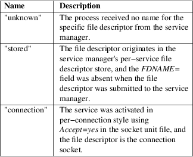

sd_listen_fds, sd_listen_fds_with_names, SD_LISTEN_FDS_START − Check for file descriptors passed by the system manager
#include <systemd/sd−daemon.h>
#define SD_LISTEN_FDS_START 3
|
int sd_listen_fds(int unset_environment); | |
|
int sd_listen_fds_with_names(int unset_environment, char*** names); |
sd_listen_fds() may be invoked by a daemon to check for file descriptors passed by the service manager as part of the socket−based activation logic. It returns the number of received file descriptors. If no file descriptors have been received, zero is returned. The first file descriptor may be found at file descriptor number 3 (i.e. SD_LISTEN_FDS_START), the remaining descriptors follow at 4, 5, 6, ..., if any.
The file descriptors passed this way may be closed at will by the processes receiving them: it's up to the processes themselves to close them after use or whether to leave them open until the process exits (in which case the kernel closes them automatically). Note that the file descriptors received by daemons are duplicates of the file descriptors the service manager originally allocated and bound and of which it continuously keeps a copy (except if Accept=yes is used). This means any socket option changes and other changes made to the sockets will be visible to the service manager too. Most importantly this means it's generally not a good idea to invoke shutdown(2) on such sockets, since it will shut down communication on the file descriptor the service manager holds for the same socket too. Also note that if a daemon is restarted (and its associated sockets are not) it will receive file descriptors to the very same sockets as the earlier invocations, thus all socket options applied then will still apply.
If a daemon receives more than one file descriptor, they will be passed in the same order as configured in the systemd socket unit file (see systemd.socket(5) for details) — if there's only one such file (see below). Nonetheless, it is recommended to verify the correct socket types before using them. To simplify this checking, the functions sd_is_fifo(3), sd_is_socket(3), sd_is_socket_inet(3), sd_is_socket_unix(3) are provided. In order to maximize flexibility, it is recommended to make these checks as loose as possible without allowing incorrect setups. i.e. often, the actual port number a socket is bound to matters little for the service to work, hence it should not be verified. On the other hand, whether a socket is a datagram or stream socket matters a lot for the most common program logics and should be checked.
This function call will set the FD_CLOEXEC flag for all passed file descriptors to avoid further inheritance to children of the calling process.
If multiple socket units activate the same service, the order of the file descriptors passed to its main process is undefined. If additional file descriptors have been passed to the service manager using sd_pid_notify_with_fds(3)'s "FDSTORE=1" messages, these file descriptors are passed last, in arbitrary order, and with duplicates removed.
If the unset_environment parameter is non−zero, sd_listen_fds() will unset the $LISTEN_FDS, $LISTEN_PID and $LISTEN_FDNAMES environment variables before returning (regardless of whether the function call itself succeeded or not). Further calls to sd_listen_fds() will then return zero, but the variables are no longer inherited by child processes.
sd_listen_fds_with_names() is like sd_listen_fds(), but optionally also returns an array of strings with identification names for the passed file descriptors, if that is available and the names parameter is non−NULL. This information is read from the $LISTEN_FDNAMES variable, which may contain a colon−separated list of names. For socket−activated services, these names may be configured with the FileDescriptorName= setting in socket unit files, see systemd.socket(5) for details. For file descriptors pushed into the file descriptor store (see above), the name is set via the FDNAME= field transmitted via sd_pid_notify_with_fds(). The primary usecase for these names are services which accept a variety of file descriptors which are not recognizable with functions like sd_is_socket() alone, and thus require identification via a name. It is recommended to rely on named file descriptors only if identification via sd_is_socket() and related calls is not sufficient. Note that the names used are not unique in any way. The returned array of strings has as many entries as file descriptors have been received, plus a final NULL pointer terminating the array. The caller needs to free the array itself and each of its elements with libc's free() call after use. If the names parameter is NULL, the call is entirely equivalent to sd_listen_fds().
Under specific conditions, the following automatic file descriptor names are returned:
Table 1. Special names

On failure, these calls returns a negative errno−style error code. If $LISTEN_FDS/$LISTEN_PID was not set or was not correctly set for this daemon and hence no file descriptors were received, 0 is returned. Otherwise, the number of file descriptors passed is returned. The application may find them starting with file descriptor SD_LISTEN_FDS_START, i.e. file descriptor 3.
These APIs are implemented as a shared library, which can be compiled and linked to with the libsystemd pkg-config(1) file.
Internally, sd_listen_fds() checks whether the $LISTEN_PID environment variable equals the daemon PID. If not, it returns immediately. Otherwise, it parses the number passed in the $LISTEN_FDS environment variable, then sets the FD_CLOEXEC flag for the parsed number of file descriptors starting from SD_LISTEN_FDS_START. Finally, it returns the parsed number. sd_listen_fds_with_names() does the same but also parses $LISTEN_FDNAMES if set.
$LISTEN_PID, $LISTEN_FDS, $LISTEN_FDNAMES
Set by the service manager for supervised processes that use socket−based activation. This environment variable specifies the data sd_listen_fds() and sd_listen_fds_with_names() parses. See above for details.
systemd(1), sd-daemon(3), sd_is_fifo(3), sd_is_socket(3), sd_is_socket_inet(3), sd_is_socket_unix(3), sd_pid_notify_with_fds(3), daemon(7), systemd.service(5), systemd.socket(5)